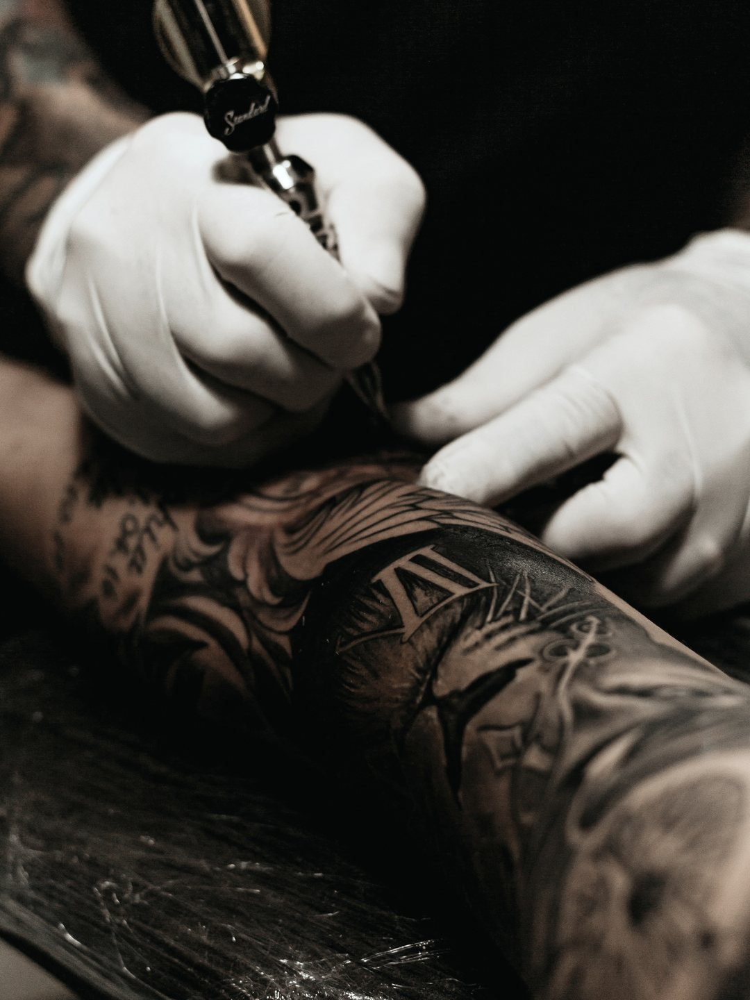
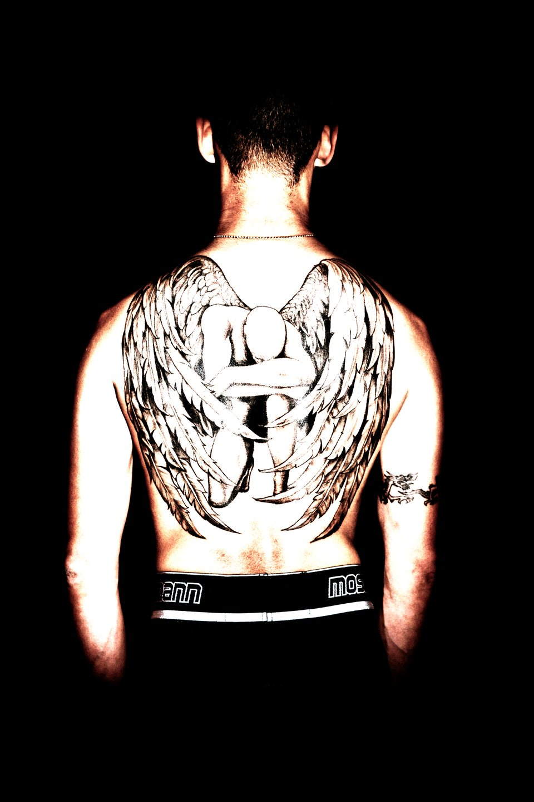
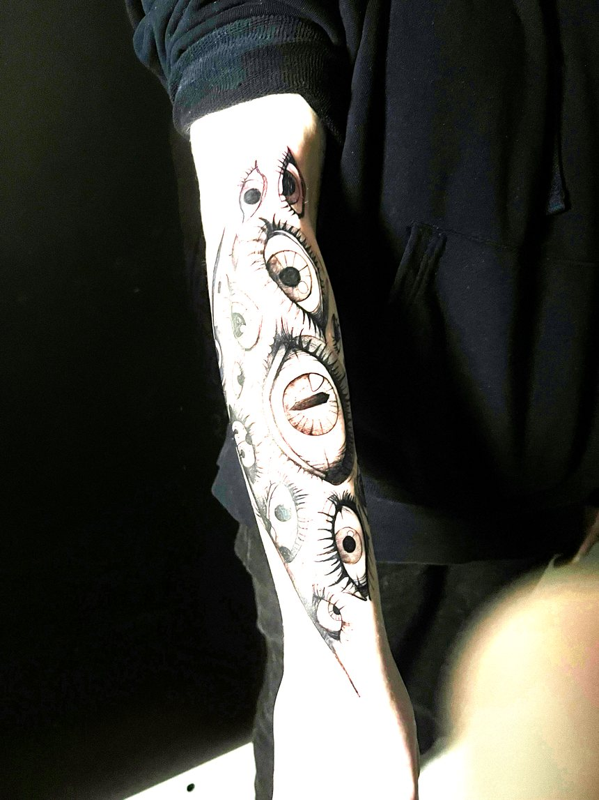
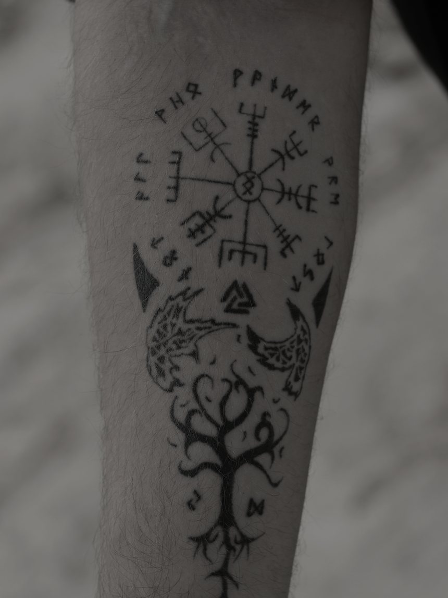
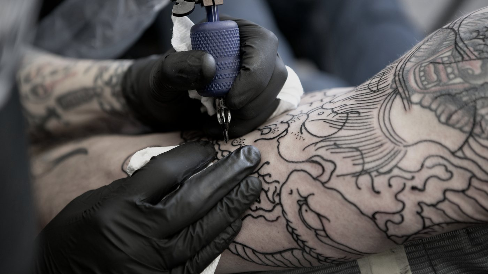
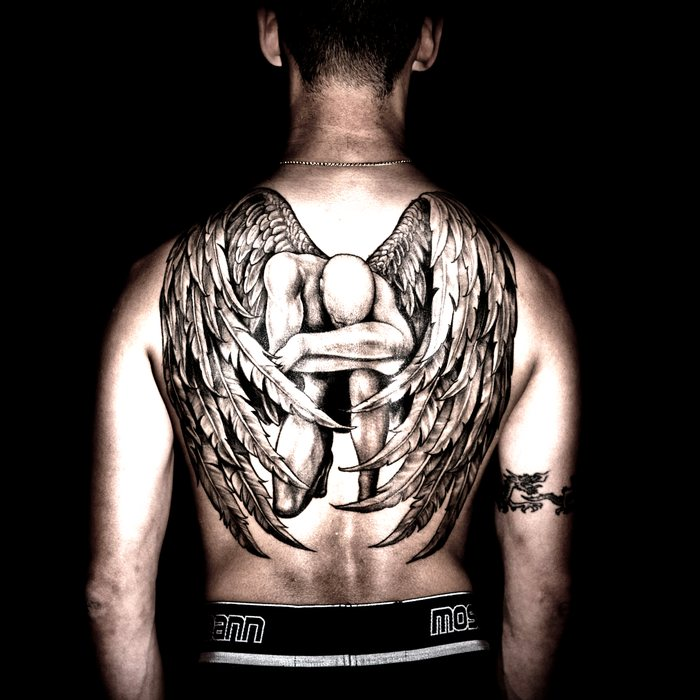
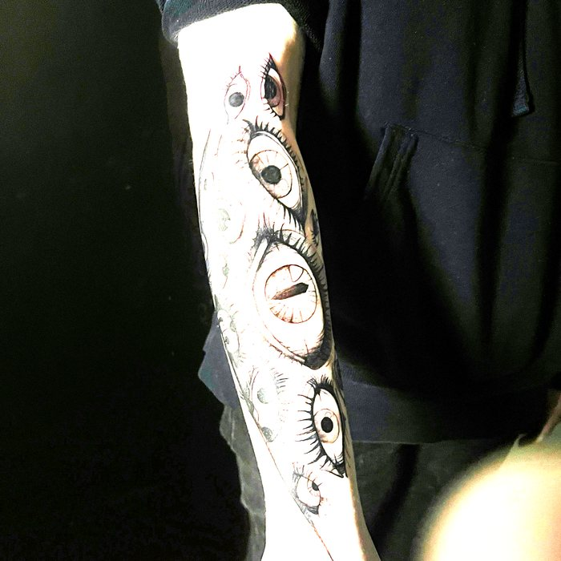
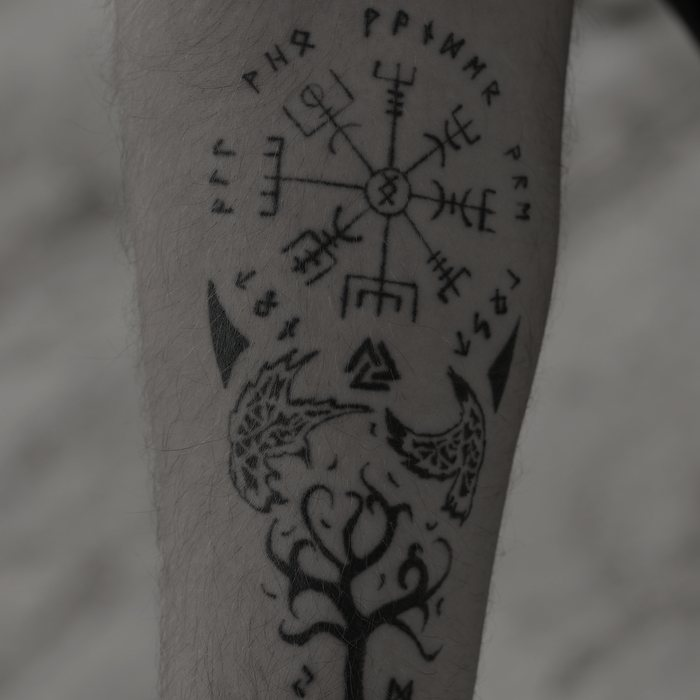

Permanent by design.
Custom work, drawn to the body it will live on. One artist, one piece at a time, and nothing touched until the drawing is right.
Custom work. Intentional design. Art made permanent.
A tattoo outlasts nearly every other decision you will make this year. It deserves more than a flash sheet and an afternoon.
Pieces, not products.
Five studies in weight, contrast and placement.




Four ways of working.
Shown through the work above rather than claimed in a list.

Black & Grey Realism
Depth built in shadow alone. Long sittings, and a design that has to read from across a room.

Blackwork
Solid black and dense linework. Bold at any size, and the style that ages most gracefully.

Fine Line
Single-needle weight. Restrained, symbolic, and placed where it can breathe.
Japanese Linework
Traditional structure — flow, wind and water — laid out to follow the body.
Every piece begins with an idea.
Most of the work happens before the machine is switched on — in the conversation, the drawing, and the four versions nobody else ever sees.
Five stages, no surprises.
Discover
A conversation before a drawing. What it is for, where it sits, how much room it needs, and whether the idea survives being said out loud.
Design
Custom artwork, drawn to your body rather than to a page. You see it before anything is permanent.
Refine
Composition, weight and placement. This is where most of the work happens, and where most of it is thrown away.
Ink
A sealed station, a fresh needle out of the pack in front of you, and as many sittings as the piece honestly needs.
Aftercare
Written guidance and a check-in. A tattoo is finished when it has healed, not when the machine stops.
Ready to make it permanent?
Tell us the idea, the placement and roughly the size. We will come back with whether it works, what it needs, and what it would cost.
Yours would take about a week.
VELLUM is a concept — the studio is invented, the photography is licensed. The site itself is real, and we would build one like it around your work.